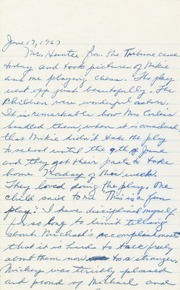
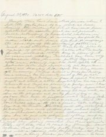

Q: What happens when publicly archived material is missing?
A: I take a class to start throwing a lot of time and theory at it.




(un)recording
You cannot see the records. The BookReader user interface presents a black void spanning across the browser window. Okay, fine. Scroll down to the “DOWNLOAD OPTIONS.” Click the hyperlink (“4 original”) to download the item. Unzip the folder. Now you have a folder containing an .SQLITE file, an .XML file, and a .JPG file (the thumbnail).
462 of the 469 files included in the “Marion Stokes Personal Papers” collection are listed in a gallery by their thumbnail image. The thumbnails are specific and unique to each entry: perforated for spiral-bound journals and five-ring binders, sun-damaged, stained, folded, limited evidence of doodling, and on and on.
What does exist is the architecture of the paper’s digital preservation. The metadata for each item in the collection includes: the republisher operator (associate-jackie-jay), the access permissions (tru), the time and date of the entry's addition, the documenting camera (Camera Sony Alpha-A7r), the location of the item's scanning (San Francisco), the size of the corresponding (inaccessible) item, and on and on.
Marion Stokes was a recorder. (See: Matt Wolf's documentary.) Her life was dedicated to gathering and preserving information. Her records exist (for now). The archival index exists (for now). They just aren't speaking to each other.
☞ indexing.html
Did you know that "index" originally referred to the index finger?
The word "index" is derived from the Latin index, meaning "one who points out." The meaning eventually shifted to signify any indicator, sign, or marker. I know this because I read a paper by Hans Wellisch—a librarian, Library and Information Science educator, and indexer—about the etymological origins and uses of the word. The word is derived from indicare ("to make known or reveal" or "to divulge or betray") which itself is closely related to indicere ("to proclaim, inflict, or declare (war)").
In the last section of "Index: the word, its meaning, history and uses", Odds and Ends, Wellisch lists "facetious, derogatory, and otherwise unclassifiable" uses of the word index. These derogatory terms include: index-hunter (1751), index-learning (1728), and index-raker (1876). I like these words, even though I've struggled to find their original contexts (because I'm not buying a subscription to the Oxford English Dictionary).
In building the first web server at CERN, Tim Berners-Lee followed the logic of a library system: a directory. (I'd tell you more about it but I'm not buying a subscription to Medium.) The logic and impact of the index, as explored in Dennis Duncan's "Index, A History of the," has been criticized from the Printing Revolution to the age of the search engine. In both the 18th and 21st century, there is a fear that the index kills curiosity and prioritizes the simulacrum. Thus: the index-raker.
What does it mean to be an index-raker in the postinternet era? (Is metadata-raker any better?) If the index simply points to the material, could index-raking be a form of tending and care? Is it an optimistic if futile act in service of the non-living index-hunters and -learners?